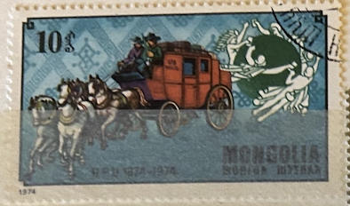
| SOURCE | TITLE| IMAGE MATCH | click to source page |
| www.allnumis.com | 10 Mongo 1974 - American Mail Coach, UPU Emblem, 1974 ... | 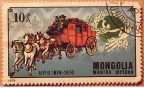 |
| www.alamy.com | Mongolia horse stamp hi-res stock photography and images ... | 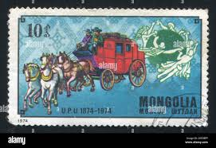 |
| www.ebay.com | Communication Mongolian Stamps for sale | eBay |  |
| www.dreamstime.com | Stamp 20 Mongol Mongo Printed in Mongolia Shows French Post ... | 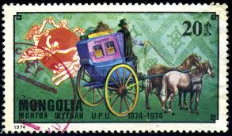 |
| www.shutterstock.com | Mongolia Circa 1974 Stamp Printed By Stock Photo ... | 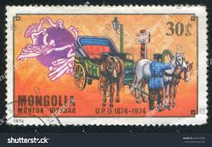 |
| www.alamy.com | Cancelled postage stamp printed by Mongolia, that shows Mail ... | 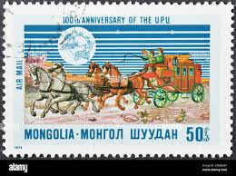 |
| www.shutterstock.com | University Stamp: Over 6,314 Royalty-Free Licensable Stock ... | 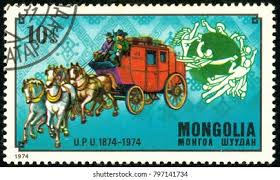 |
| www.ebay.com | UPU, UNION POSTAL UNIVERSAL 100th Anniv. >EXPO ... | 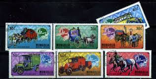 |
| www.pinterest.com | Bugün kaydedecek 60 mongolian stamps fikir | pul, posta pulu ... | 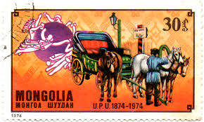 |
| cn.dreamstime.com | 蒙古复古邮票编辑类图片. 图片包括有邮戳, 明信片, 邮费, 蒙古 ... | 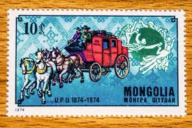 |
| www.mysticstamp.com | 824-30 - 1974 Mongolia - Mystic Stamp Company | 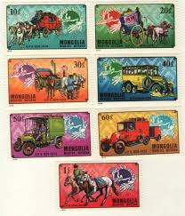 |
| numizm.at | Почтовая марка 10 мунгу 1974 года Монголия «100-летие ... | 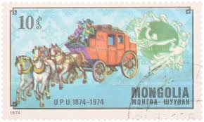 |
| colnect.com | Stamp: Horse-drawn fire pump (Mongolia(Fire Fighting) Mi:MN ... | 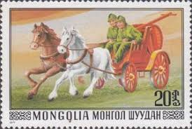 |
| salon-collection.ru | 1974г. Монголия Почтовые марки Всемирный почтовый союз |  |
| www.bidcurios.com | Mongolia - Used Stamp - Fire Engines, Fire Brigade - Fire ... |  |
| www.allnumis.com | 30 Mongo - Fire Brigade - Horse-drawn Steam Pump, Misc ... | 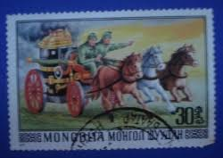 |
| item.fril.jp | 1974年 モンゴル発行｜UPU創立100周年記念切手（30M・馬車図）の ... | 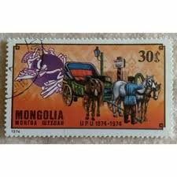 |
| en.todocoleccion.net | sello mongolia. flora alpina (1991) - Buy Antique stamps of ... |  |
| www.shutterstock.com | Mongolia Circa 1974 Stamp 20 Mongol Stock Photo 1708831114 ... | 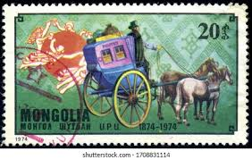 |
| www.skelbiu.lt | Skelbimai: lankomiausias Lietuvoje pardavimo, nuomos ir kitų ... | 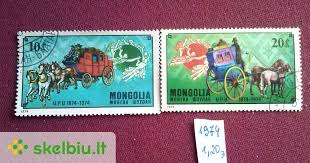 |
| www.ebay.com | Mongolia 1977: Set Of 5 Vars...#970-74 Stamps In Really Good ... |  |
| www.dreamstime.com | Mongolia postage stamp editorial photo. Image of national ... | 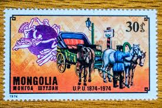 |
| aukro.cz | Známky Mongolsko výprodej od korunky | Aukro | 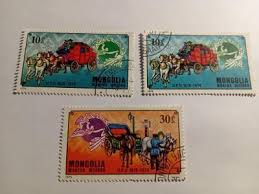 |
| www.alamy.com | MONGOLIA - CIRCA 1977: stamp printed by Mongolia, Girl ... |  |
| www.redinilunghe.it | collezione di francobolli con cavalli e carrozze |  |
| numizm.at | Почтовая марка 30 мунгу 1974 года Монголия «100-летие ... | 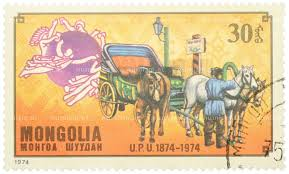 |
| www.linns.com | Stamps recall how mail was carried by horse-drawn coaches | 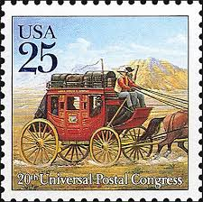 |
| www.publicdomainpictures.net | Paper Straps Horse Free Stock Photo - Public Domain Pictures | 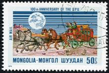 |
| unc.ua | Марка Монголия 1977 транспорт пожарные повозка фауна лошади ... | 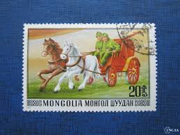 |
| aukro.cz | Poštovní známky Mongolsko - strana 9 z 15 | Aukro.cz | 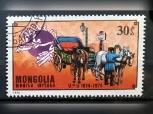 |
| treasurefoxstamps.com | Wagons West Curated Set .. Vintage Unused US Postage Stamps ... | 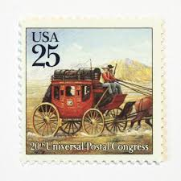 |
| www.etsy.com | Ten 3c Conestoga Wagon .. Vintage Unused US Postage Stamps ... | 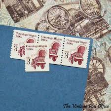 |
| meshok.net | Почтовые марки. Монголия.» на Мешке #юбилей | 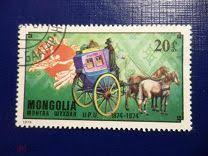 |
| jp.mercari.com | モンゴル 使用済切手 6枚セット - メルカリ | 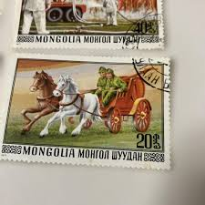 |
| www.delcampe.net | Mongolie - Diligence postale (Cheval/Animaux) - Mongolie ... | 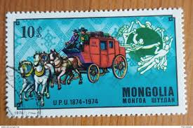 |
| www.mysticstamp.com | 1898Ad - 1982 4c Transportation Series: 1890s Stagecoach ... | 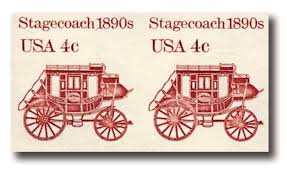 |
| postalmuseum.si.edu | 20c First American Streetcar single | National Postal Museum | 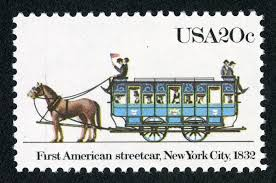 |
| www.istockphoto.com | 460+ Mongolian Stamp Stock Photos, Pictures & Royalty-Free ... | 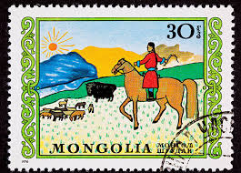 |
| vocal.media | The Mongol Postal Service: How Genghis Khan Invented the ... | 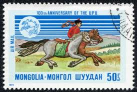 |
| numizm.at | Почтовая марка 30 мунгу 1974 года Монголия «100-летие ... | 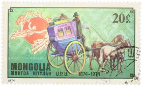 |
| www.gettyimages.com | 38 Mongolian Postage Stamp Stock Photos, High-Res Pictures ... | 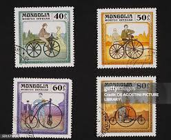 |
| stampaday.wordpress.com | National Stamp Collecting Month: The Mail Coach – A Stamp A Day | 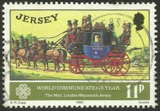 |
| www.ebay.com | Mongolia 824-830,C68, MNH. Michel 909-915, Bl.38. UPU-100 ... | 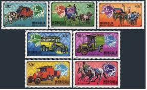 |
| www.xabusiness.com | T151 Scott 2276-78 The Bronze Chariots Unearthed from the ... | 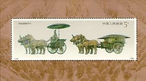 |
| www.facebook.com | On 9 May 1874, first horse drawn carriage debuted in Mumbai ... | 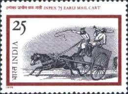 |
| ru.pngtree.com | 500 карета фотографии, картинки и фоновые изображения для ... | 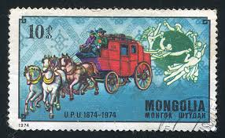 |
| unc.ua | Марка. Монголия. Повозка с лошадьми купить на | Аукціон для ... | 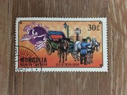 |
| thestampforum.boards.net | Bicycles and Cycling | The Stamp Forum (TSF) | 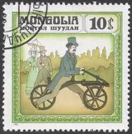 |
| www.postbeeld.com | Stamp 1965, Mongolia Horses 8v, 1965 - Collecting Stamps ... | 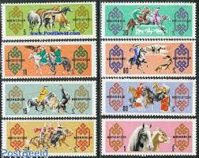 |
| bikenoob.com | Bikes On Stamps - Bike Noob | 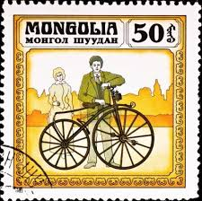 |
| www.freepik.com | Vintage postage stamps set ancient landscapes dragon and ... | 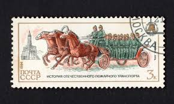 |
| www.instagram.com | postage stamp from Equatorial Guinea featuring a Lipizzaner ... | 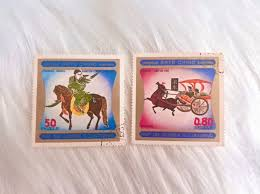 |
| www.amazon.com | SINGING WHEELS, The Alice and Jerry Basic Reading Program ... | 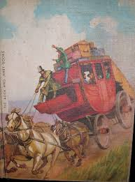 |
| www.bridgemanimages.com | Image of Vehicles: Carriage, 17th Century (colour litho) by ... | 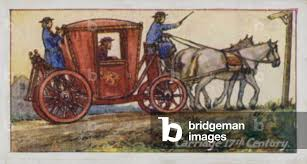 |
| aukro.cz | Známky Mongolsko | Aukro | 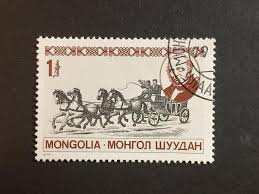 |
| m.poppe-stamps.com | Poppe Stamps: Mongolia, 1982, 1431, Bicycles - stamps for ... | 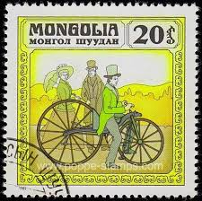 |
| www.linns.com | Sharp rise in value for 1943 Mongolia set | |
| jp.mercari.com | モンゴル切手 未使用 7枚 - メルカリ | |
| www.historyhit.com | Thurn and Taxis: How One Family Delivered Most of Early ... |